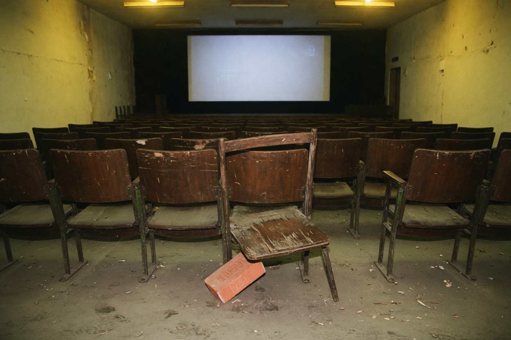
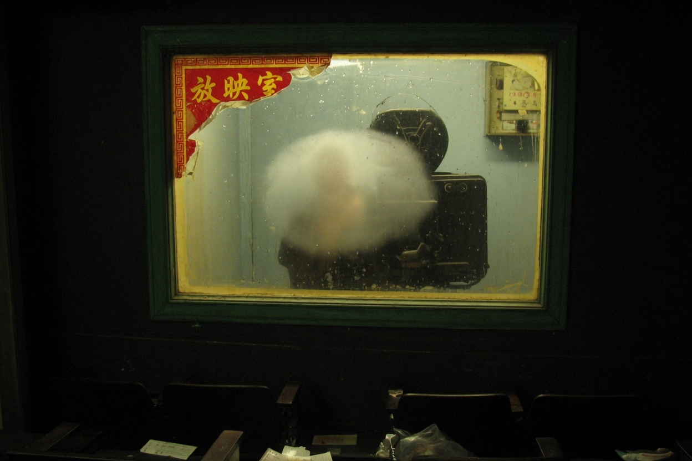

Inside the house


Tickets on the first floor. Booth on the second. Guests stay downstairs. Upstairs are the FilmVault and the Darkroom. The vault door says internal. No lock. Only a line: Stub has to match before you go in.
Posters on the wall all stop before 2008. One had its title torn off. A row of small names left. The small names were changed in ballpoint. Changed to whom — you only see that on the internal list.
The AC is a window unit. It drips. Water hits the aisle at row fourteen. The aisle is always wet. Cleaning said do not lay carpet. Carpet remembers footprints.
Group photos live in the member space. This hall page only puts up two empty shots. Empty is not a broken file. Someone painted the faces out.
One hundred twenty seats never filled. What filled was the last row. Last row has seven places. The one against the wall is missing a foot, brick under it. Brick left from Jinque West Road repairs. The road crew carried it in and said your chairs are harder to please than the pavement.
The upstairs stair is steep. Steep enough that a guest can look up and see the projection window and still not walk it. Walking it wants a key. Key in the tin. Tin on the first floor. First-floor people do not know they are holding the upstairs paperwork.
Wallpaper is damp. Damp sits right under the window unit. Unit drips. Water wrinkles poster edges. Wrinkled posters still show faces. What you cannot read is the one with the title torn off. That one is only a row of small names, small names changed in ballpoint. Changed names only match on the internal list.
Someone stuck gum on a row-fourteen chair back. Stuck gum outlasts posters. Long-lived things remember who sat. The person who sat left. The gum stayed. House people call that a trace. A trace is not enough for evidence. Evidence is in the tin and the list. The list is not in the empty shots on this page.
The House page has no dark door besides search. Dark doors are in proper names.